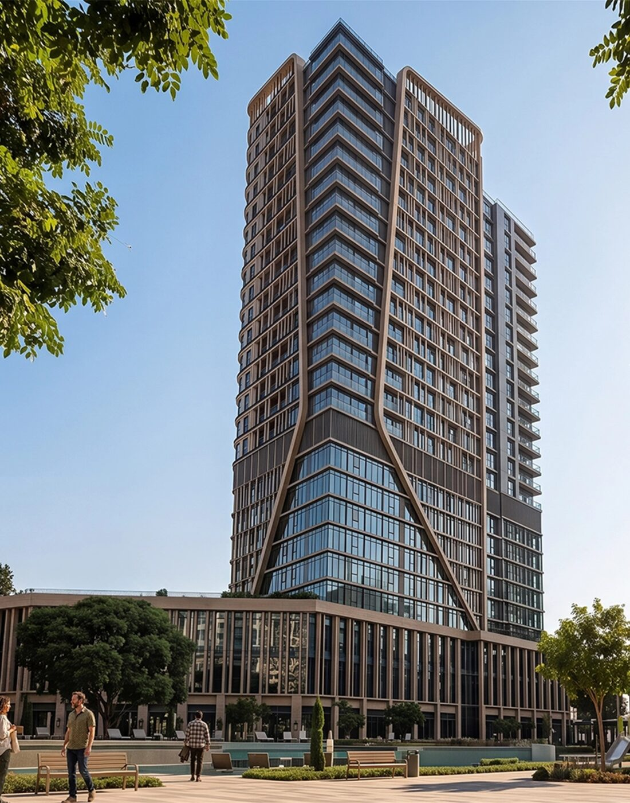
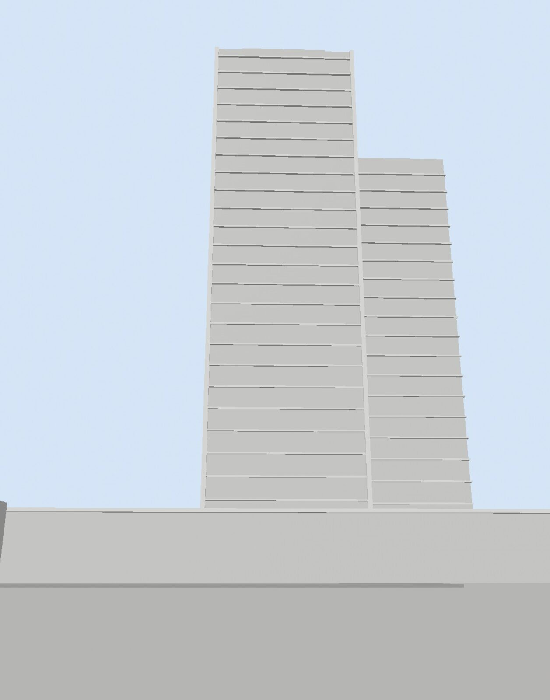
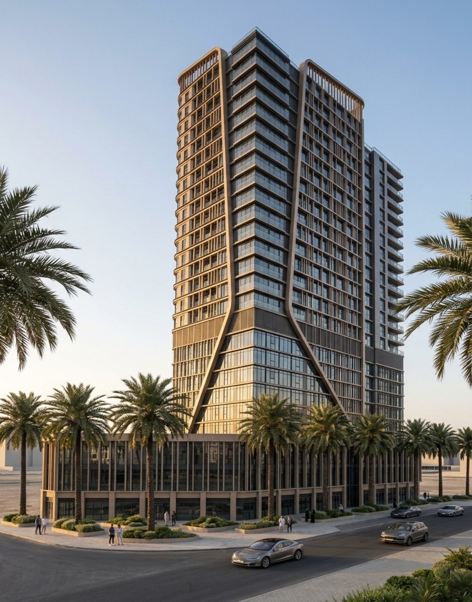
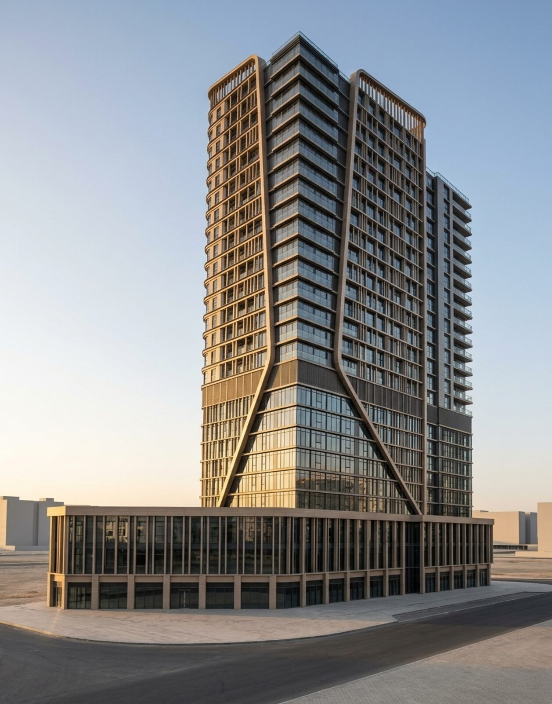
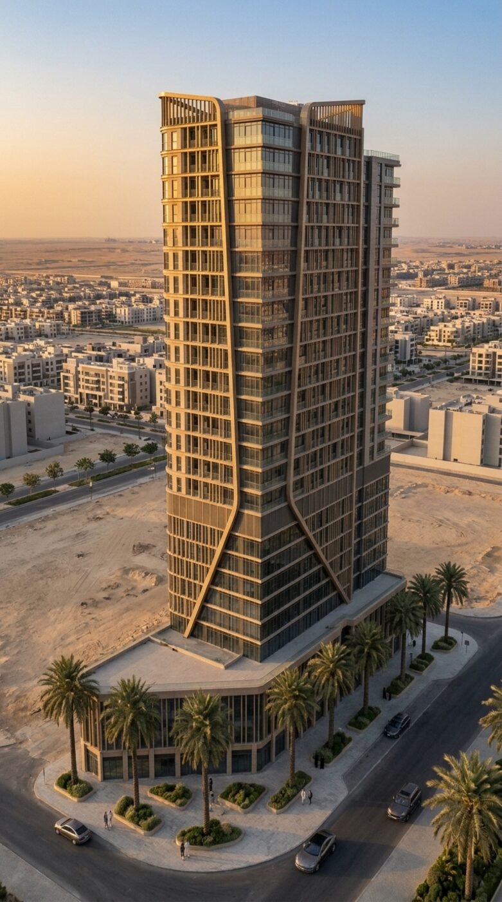

From clay
to film.
Four residential and commercial developments, taken from grey massing to photoreal motion. The geometry and camera are locked in 3D; AI is used only to dress them in material, light and life.
Six stages, one rule.
3D owns the truth — scale, lens, camera path and building volumes. Generative models own the surface. That split is what keeps every frame faithful to the architecture while cutting look-development from weeks to hours.

01Brief
Developer renders and site facts fix the massing, materials and mood for each project.
Reference · Site data
02Clay massing
Volumes blocked at real scale; lens and camera move locked — 26–32 mm, 120 frames at 24 fps.
Nuke 3D · ScanlineRender
03Look-dev
The clay frame is restyled into a photoreal still that matches the brief, pixel-aligned to the 3D.
Gemini · Nano Banana
04Clean plate & mattes
People, cars and foliage removed; difference mattes isolate each element for compositing.
Gemini edit · Nuke diff matte- 05
Motion
The clay animation is re-rendered with the look-dev still as ingredient — camera and geometry survive untouched.
Google Flow · Omni 1.2 Flash 
06Coverage & finish
Extra angles generated in the same look, then graded, upscaled and cut into the reel.
Gemini · Topaz · Edit
From render to reality.
Before the AI pipeline: interiors I designed in 3ds Max and then delivered on site. Shell, render, handover — the same discipline of matching a visual promise to what actually gets built.